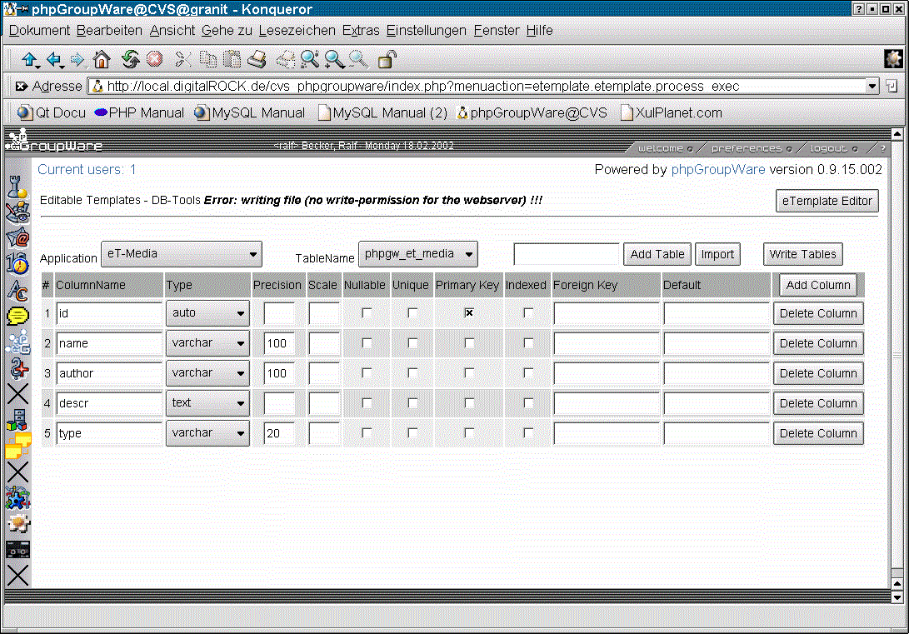
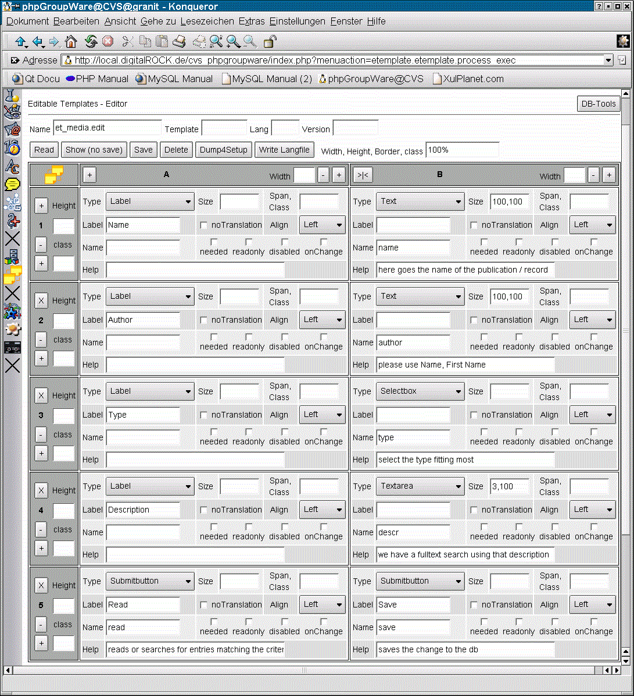
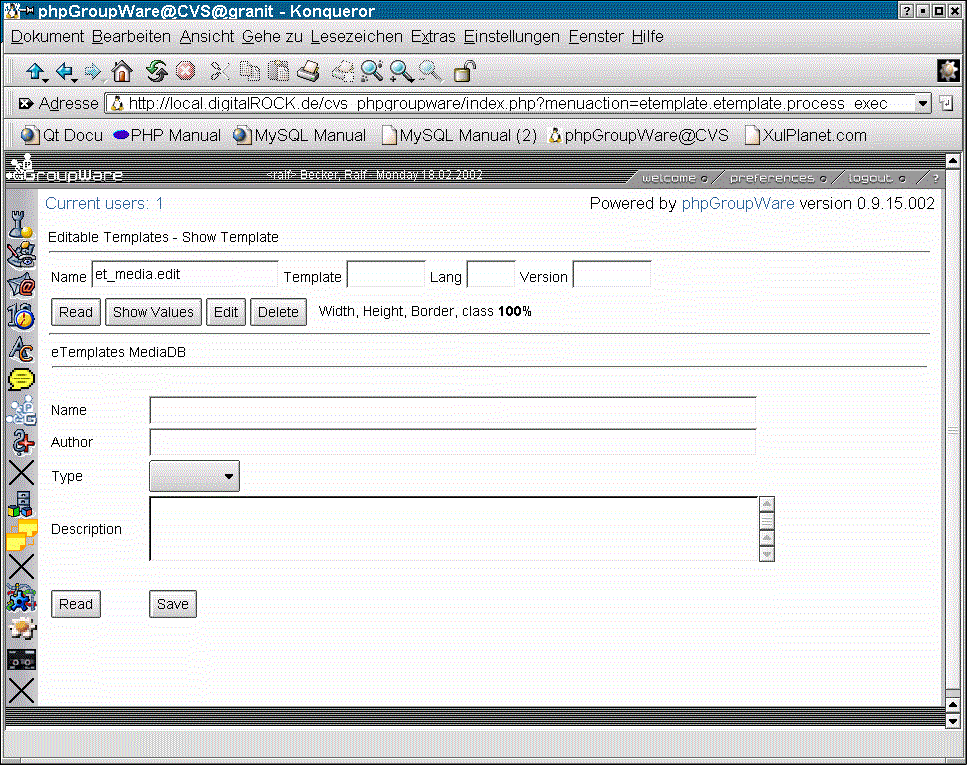
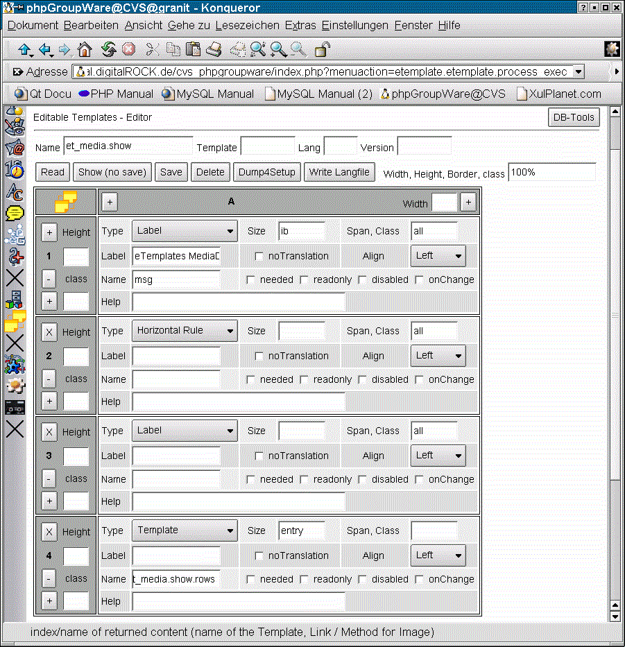
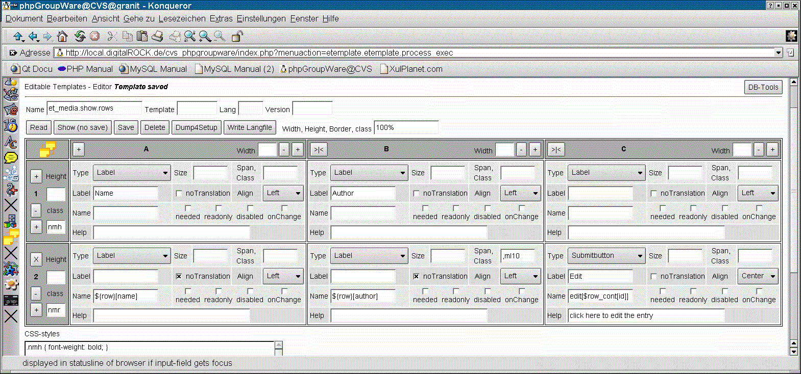

<!DOCTYPE HTML PUBLIC "-//W3C//DTD HTML 4.0//EN">
<html>
<head>
  <title>phpGroupware: eTemplates - Templates and Dialog-Editor</title>
</head>
<body>
<h1>eTemplate - Templates and Dialog-Editor for phpGroupware</h1>
<h3>RalfBecker@outdoor-training.de</h3>
<p>A developers tutorial how to write an application with the new eTemplates.<br>
It is also an introduction how to write a phpgw- and setup(3)-compatible app.</p>
<hr>
<h1>Introduction - The concept of the eTemplates</h1>
The eTemplates
<ul>
	<li>consist out of rows and cols with input-fields of several types
	<li>there is a dialog-editor (one part of the etemplate-app) to create the eTemplate
	<li>eTemplates can be (and are usully) nested, eg. a template-field can contain an other eTemplate
	<li>each field / cell of the template can have a lable which is automaticaly run through lang()
		(the content of the field can be run through lang() too)
	<li>the dialog editor can write all labels in a lang-file (mergeing it with the existing ones)
	<li>eTemplates have a name of the form app.function[.subtemplate] which is used to call them up
	<li>they can have further keys, on loading the class picks the most appropriate one for a user:
	<ol>
		<li>group: the id of a group if the template is just for that group (that allows admin to show differnt views to each group)
		<li>lang: the 2 or 5 letter language code (or empty for a non-language specific template)
		<li>template set: they belong too (if the template-set key is empty it is an default-template)
		<li>version: version number like: '0.9.15.001'
	</ol>
	<li>they are stored in an array and in serialized form in the db-table 'phpgw_etemplate'
	<li>the dialog editor can dump all templates of an app for distribution (so they can be in the CVS too)
	<li>they encapsulate differnt UI (User Interface) types from the app: at the moment only a HTML one is ready,
	but a GTK one (using php-gtk, <b>running as native app under linux and win32</b>) and XUL is planed.
</ul>
<hr>
<h1>Tutorial / Example: a simple media database</h1>
<p>As an example we will run now through the necessary steps to create a simple media database using eTemplates and
other tools and classes from the eTemplate app: db-tools and class.so_sql.inc.php.</p>
<p>Out media database should have the usual fields: name, author, description, type: BOOK, CD, VIDEO and should be able
to edit records and search for them.</p>
<p>As a preaquistion you need to get / checkout the etemplate app, install the app via setup/manage applications and
enable your account for using the app (Admin/User account: check eTemplates).</p>

<h2>1. Creating a new phpgw app directory</h2>
<p>Each app need a name, eg. 'et_media'. We now need to create the following directory structur above the phpgroupware dir:
<pre>
et_media				(that has to be identical to our app-name)
	+ setup				(files necessary for the setup Programm, give the webserver write-permission to that dir)
	+ inc				(class-files)
	+ templates			(templates, still need to store the images and get around a lot of complains from the api)
		+ default
			+ images	(here goes our images / icons)
</pre>

<h2>2. registering the app manualy</h2>
<p>To be able to see the app in the navbar and call it we need to do the following steps (later this can be done via setup)</p>
<ol>
	<li>login to phpgw as an admin
	<li>call the admin app (the first icon with the tower)
	<li>start Admin/Applications
	<li>click on Add
	<li>type in 'et_media' for the app-name and eg. 'eT-Media' for the titel, leave the rest alone and hit Add
	<li>start Admin/User accounts and enable the new app for your account
</ol>

<h2>3. creating <b>et_media/setup/setup.inc.php</b></h2>
<p>That files contains the necessary information for setup to install the app. </p>
<pre>
&lt;?php
	$setup_info['et_media']['name']      = 'et_media';
	$setup_info['et_media']['title']     = 'eT-Media';
	$setup_info['et_media']['version']   = '0.9.15.001';
	$setup_info['et_media']['app_order'] = 100;	// at the end
	$setup_info['et_media']['tables']    = array('phpgw_et_media');
	$setup_info['et_media']['enable']    = 1;

	/* Dependacies for this app to work */
	$setup_info['et_media']['depends'][] = array(
		 'appname' => 'phpgwapi',
		 'versions' => Array('0.9.13','0.9.14','0.9.15')
	);
	$setup_info['et_media']['depends'][] = array(	// this is only necessary as long the etemplate-class is not in the api
		 'appname' => 'etemplate',
		 'versions' => Array('0.9.13','0.9.14','0.9.15')
	);
</pre>

<h2>4. setting up the db-table with the db_tools and setup</h2>
<p>To enable setup to create a db-table for us, we need to define the fields we want.<br>
We can use the db-Tools from the etemplate app to create the file for us:</p>



<ol>
	<li>start the etemplate app and click on the button up, right which says db-Tools
	<li>select Application: eT-Media
	<li>type: phpgw_et_media in the field in front of the [Add Table] button and click on the button
	<li>now use [Add Column] to create the necessary fields as shown on the screenshot
	<li>Click on [Write Table] (If you get the error-message like in the screenshot, you need to give the webserver write-permission
	to the setup-dir of et_media, leave the write-permission as it is necessary later on too, click on write again)
	<li>log out and log into setup again and start manage applications
	<li>eT-Media is shown now as installed but need upgrade, don't select upgrade, check remove and submit
	<li>the next page should tell you everythings allright so click on go back (or if u use konqueror reload)
	<li>now for eT-Media only install is offerd, check it and submit
	<li>you can now log out of setup, out db-table is now created
</ol>

<h2>5. creating an eTemplates for the edit-dialog</h2>
<p>Now we need a nice edit dialog and use the eTemplate editor to set it up:</p>

<ol>
	<li>start the etemplate app and type <b>'et_media.edit'</b> in the name field
	<li>enter the field-types and other data as shown above
	<li>click on the [+] in the first column of the last row to add more rows
	<li>click on save to save the dialog / template
	<li>you can use [Show (no save)] to have a look at it:<p>
</ol>


<p>As you see above i added an application titel, a horizontal rule after it and some space (empty label's). Do so if you want.</p>

<h2>6. setting up the index page</h2>
<p>The index page is only used if someone clicks on the navbar icon (or on the black cross as we haven't supplied one so far).<br>
Create the file <b>/et_media/index.php</b> with the following content:</p>
<pre>
&lt;?php
	$GLOBALS['phpgw_info']['flags'] = array(
		'currentapp'	=> 'et_media',
		'noheader'	=> True,
		'nonavbar'	=> True
	);
	include('../header.inc.php');

	$et_media = CreateObject('et_media.et_media');

	$et_media->edit();

	$GLOBALS['phpgw']->common->phpgw_footer();
</pre>

<h2>7. the code of class.et_media.inc.php</h2>
<p>As a first step, we only save new entries. The code of the app is in <b>/et_media/inc/class.et_media.inc.php</b>:</p>
<pre>
&lt;?php
	/**************************************************************************\
	* phpGroupWare - eTemplates - Tutoria Example - a simple MediaDB           *
	* http://www.phpgroupware.org                                              *
	* Written by Ralf Becker <RalfBecker@outdoor-training.de>                  *
	* --------------------------------------------                             *
	*  This program is free software; you can redistribute it and/or modify it *
	*  under the terms of the GNU General Public License as published by the   *
	*  Free Software Foundation; either version 2 of the License, or (at your  *
	*  option) any later version.                                              *
	\**************************************************************************/

	/* $Id$ */

	if(!isset($GLOBALS['phpgw_info']['flags']['included_classes']['so_sql']))
	{
		include(PHPGW_API_INC . '/../../etemplate/inc/class.so_sql.inc.php');
		$GLOBALS['phpgw_info']['flags']['included_classes']['so_sql'] = True;
	}

	class et_media extends so_sql
	{
		var $messages = array(
			'nothing_found' => 'Nothing matched search criteria !!!',
			'anz_found' => '%d matches on search criteria',
			'saved' => 'Entry saved',
			'error_writeing' => 'Error: writeing !!!'
		);
		var $types = array(
			'' => 'Select one ...',
			'cd' => 'Compact Disc',
			'dvd' => 'DVD',
			'book' => 'Book',
			'video' => 'Video Tape'
		);

		function et_media($lang_on_messages = True)
		{
			$this->tmpl = CreateObject('etemplate.etemplate','et_media.edit');

			$this->so_sql('et_media','phpgw_et_media');	// sets up our storage layer using the table 'phpgw_et_media'
			$this->empty_on_write = "''";	// that means if a column is empty how to write in the db, the default is NULL

			$this->public_functions += array(
				'edit' => True,
				'writeLangFile' => True
			);

			if ($lang_on_messages)
			{
				reset($this->messages);
				while (list($key,$msg) = each($this->messages))
					$this->messages[$key] = lang($msg);
			}
		}

		function edit($content='',$msg = '')
		{
			if (is_array($content))	// not first call from index
			{
				if ($content['id'] > 0)
				{
					$this->read($content);
				}
				$this->data_merge($content);

				if (isset($content['save']))
				{
					$msg .= $this->messages[!$this->save() ? 'saved' : 'error_writeing'];
				}
				elseif (isset($content['read']))
				{
					unset($content['id']);
					$found = $this->search($content,False,'name,author');

					if (!$found)
					{
						$msg .= $this->messages['nothing_found'];
					}
					else
					{
						$this->init($found[0]);
					}
				}
			}

			// now we filling the content array for the next call to etemplate.exec

			$content = $this->data + array(
				'msg' => $msg
			);
			$sel_options = array(
				'type' => $this->types
			);
			$no_button = array(
				'delete' => !$this->data[$this->db_key_cols[$this->autoinc_id]]
			);
			$this->tmpl->exec('et_media.et_media.edit',$content,$sel_options,$no_button,array(
				'id' => $this->data['id']
			));
		}
	}
</pre>

<h2>8. adding the search-function and a list-dialog</h2>
<p>As saveing and reading of entries is working now we want to search for an entry and show a list of the result (if it's more than one).<br>
First we need to create an other eTemplate to show the list: <b>'et_media.show'</b></p>

<p>As you see the templates includes an other template: <b>'et_media.show.rows'</b></p>

<p>We need some code in the class to call the template and fill the content:</p>

<pre>
	function show($found)
	{
		if (!is_array($found) || !count($found))
		{
			$this->edit();
			return;
		}
		reset($found);
		for ($row=1; list($key,$data) = each($found); ++$row)
		{
			$entry[$row] = $data;
		}
		$content = array(
			'msg' => sprintf($this->messages['anz_found'],count($found)),
			'entry' => $entry
		);
		$this->tmpl->read('et_media.show');

		$this->tmpl->exec('et_media.et_media.edit',$content);
	}
</pre>

<p>To call the show function, we need to make some changes to the edit-function too:</p>

<pre>
				elseif (isset($content['read']))
				{
					unset($content['id']);
					$found = $this->search($content,False,'name,author');

					if (!$found)
					{
						$msg .= $this->messages['nothing_found'];
					}
					elseif (count($found) == 1)
					{
						$this->init($found[0]);
					}
					else
					{
						$this->show($found);
						return;
					}
				}
				elseif (isset($content['entry']['edit']))
				{
					list($id) = each($content['entry']['edit']);
					if ($id > 0)
					{
						$this->read(array('id' => $id));
					}
				}
</pre>

<p>While makeing this changes we can add a [Cancel] and [Delete] button too:</p>

<pre>
				elseif (isset($content['cancel']))
				{
					$this->init();
				}
				elseif (isset($content['delete']))
				{
					$this->delete();
					$this->init();
				}
<pre>

<p>Of course we have to add this buttons to the template 'et_media.edit'</p>

<h2>9. creating the english lang-file</h2>
<p>To get rid of the stars '*' behind each Label and to be able to translate the app in other languages we need to create a lang-file<br>
There are 2 possibilties to create it automaticaly:</p>
<li>Use the [Write Langfile] button in the eTemplate editor (put the app-name 'et_media' in the name-field first)<br>
	That will omitt our own messages in the class!!!
<li>We use a function in our class to call etemplate::writeLangFile('et_media','en',$extra) and can so supply some extra strings.<br>
	If we add this function to the public_functions-array in our class, we can just call this function via the browser:<br>
	http://ourDomain/phpgroupware/index.php?menuaction=et_media.et_media.writeLangFile (the errormsg can be savely ignored)<br>
	This is the function (don't forget to add it like the edit-function to public_functions):
</p>
<pre>
	function writeLangFile()
	{
		$etm = new et_media(False);	// no lang on messages

		$this->tmpl->writeLangFile('et_media','en',$etm->messages);
	}
</pre>

</body>
</html>